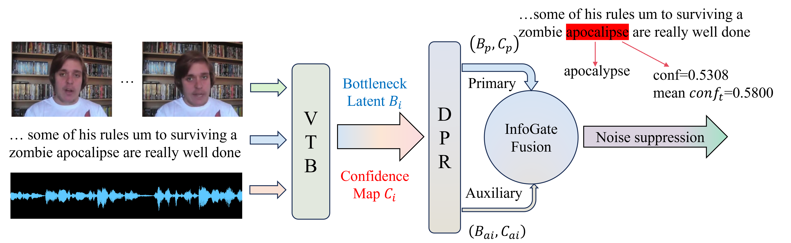

My research focuses on multimodal sentiment analysis, aiming to develop AI frameworks
that support the full lifecycle of multimodal model development, including training,
inference, and evaluation.
arXiv Preprint · Acceptance Expected
GRCF: Two-Stage Groupwise Ranking and Calibration Framework for Multimodal Sentiment Analysis
Manning Gao, Leheng Zhang, Shiqin Han, Haifeng Hu, Yuncheng Jiang, and Sijie Mai.
arXiv:2601.09606. Average review score: 3.6, with no negative reviews.
GRCF addresses key limitations in multimodal sentiment analysis: pointwise regression is
sensitive to label noise and ignores relative sentiment order, while pairwise ordinal
learning often treats all comparisons uniformly and uses static ranking margins. Inspired
by Group Relative Policy Optimization, GRCF introduces a two-stage framework that preserves
relative ordinal structure while keeping absolute sentiment scores calibrated.
Stage 1 uses a GRPO-inspired advantage-weighted dynamic margin ranking loss to focus on difficult sample groups.
Stage 2 applies an MAE-driven calibration objective to align predicted sentiment magnitudes with gold scores.
The framework targets core regression benchmarks and also extends to classification tasks such as humor and sarcasm detection.
GRCF overview: from pointwise regression and pairwise ordinal learning to group-aware ranking.GRCF model architecture: multimodal encoders, fusion, calibration, and group-aware ranking loss.
EMNLP 2026 Submission
PRISM: Primary-Centric Multimodal Fusion with Information Bottlenecks and Confidence-Aware Gating
First-author submission.
PRISM studies dynamic primary modality selection for multimodal sentiment analysis.
It focuses on using a primary modality as the organizing signal while suppressing noisy
modality information through information bottlenecks and confidence-aware gating.
Selects a primary modality dynamically instead of relying on fixed fusion rules.
Suppresses noisy modality features with information bottleneck mechanisms.
Improves trainable modality selection with confidence-aware gating.

PRISM motivation: primary-centric selection with information bottlenecks and confidence-guided noise suppression.PRISM architecture with dynamic primary modality selection, InfoGate fusion, and information bottleneck losses.
Research Direction
These works are part of my broader interest in multimodal affective computing,
multimodal learning, and reliable AI systems for language, vision, and interaction data.